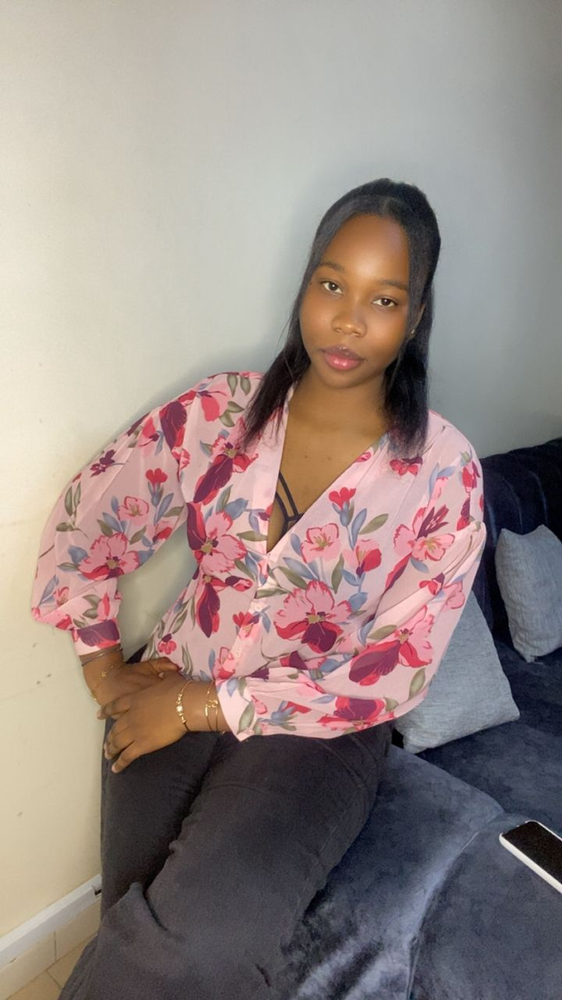

About Me
Je m’appelle Mariame Ndiaye, étudiante en Licence 2 en Génie Logiciel et Administration Réseaux . Passionnée par le domaine du numérique, je m’intéresse particulièrement au développement web ainsi qu’aux technologies liées aux systèmes et réseaux. Au cours de ma formation, j’ai acquis des bases solides en programmation, en conception de sites web et en logique informatique. J’aime concevoir des interfaces simples, modernes et fonctionnelles, tout en veillant à offrir une bonne expérience utilisateur. Curieuse, motivée et rigoureuse, je cherche constamment à développer mes compétences et à relever de nouveaux défis dans le domaine de l’informatique. Mon objectif est de devenir Ingénieure en Cybersécurité Aéronautique, tout en restant passionnée par le développement web.
Me contacter